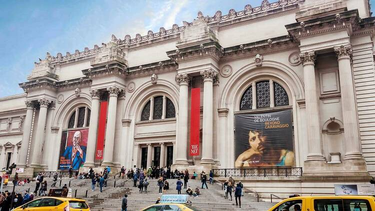

Discover the City That Never Sleeps: Essential New York Visit
"Let FarawayHome be your compass in the city that weaves dreams into its skyline. Together, we'll navigate the heartbeat of New York, uncovering hidden gems and iconic landmarks. Embark on a journey that transcends the ordinary, where every moment is a quote-worthy chapter in your New York story."

Central Park:
Embark on a journey through the heart of New York's soul, where Central Park unfolds as a serene haven within the bustling cityscape. Walk its paths, discover its secrets, and let the whispers of nature inspire your urban adventure. Central Park beckons, inviting you to unwind, explore, and find beauty in the simplicity of every step.
Step into the mesmerizing embrace of Times Square, where the brilliance of neon lights mirrors the vibrant pulse of New York City. Navigate through the lively streets, immerse yourself in the pulsating energy, and let the sheer beauty of Broadway illuminate your journey. In the heart of the city that never sleeps, Times Square awaits—a breathtaking spectacle for those captivated by the allure of urban enchantment
The Statue of Liberty and Ellis Island
Journey to the Statue of Liberty, where the grandeur of New York Harbor meets the elegance of Lady Liberty. Sail across the waves, marvel at her grace, and let the echoes of freedom resonate within. Amidst the city's rhythm, the Statue of Liberty stands tall—a symbol of strength, simplicity, and the pursuit of dreams

The Metropolitan Museum of Art
"Step into the Metropolitan Museum of Art, where the spirit of creativity echoes through its grand halls. Roam through exhibits, encounter art that transcends time, and let the stories of civilizations past unfold before you. Amidst the city's rhythm, the Met awaits—a testament to the beauty of simplicity and the profound impact of artistic expression."
Contact Us with Your Feedback
"Dear FarwayHome Explorer,
Adventures are meant to be thrilling, but we know they also come with unexpected challenges. If you faced any bumps along the road during your recent NYC trip, share your story with us at setbackfarawayhome@gmail.com dedicated team thrives on overcoming obstacles, and rest assured, any lessons learned will be woven into an even more remarkable experience for your next journey with us. Your feedback is the compass guiding us towards continuous improvement, ensuring your future travels are nothing short of extraordinary.
Happy Trails,
The FarwayHome Team".